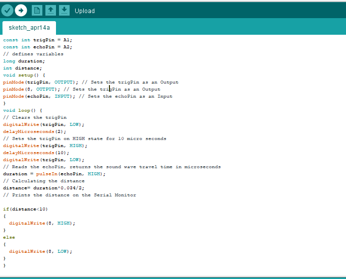

Input Devices
By: Debasis Parida on:
This week's assignment i had to use a sensor to a microcontroller board that i designed and read the sensor signal. In Group assignment, we had to probe a sensor's analog and digital signals and analyse them. This week, i have used an Ultrasonic sensor to read the analog values and measure the distance.
Components required:
- Arduino UNO
- ATtiny44
- HCSR04 Ultrasonic sensor
- LED
- Jumpers
- 20MHz Crystal Oscillator
- 10K Resistor
- ISP Headers
Designing a Microcontroller board:
Designing the schematic:
First of all i have designed the schematic digram for the ATtiny44 microcontroller board.I have used Eagle for designing the Schematic and PCB board layout.The schematic digram of the board is shown below:
Now, after routing of all the components as per the connection diagram, the board looks something like shown below.This board is now exported to PNG for milling in SRM20.
PCB Milling in SRM20:
After successful completion of PCB design,the designed files are milled in SRM20 using the procedures which we have done in past week assignments.The final PCB after milling looks like below:
Now, after soldering the components in the PCB, the soldered PCB looks like below:
Testing Ultrasonic sensor with Arduino:
Ultrasonic sensor is an electronic device that measures the distance of a target object by emitting ultrasonic sound waves, and converts the reflected sound into an electrical signal. Ultrasonic waves travel faster than the speed of audible sound (i.e. the sound that humans can hear). Ultrasonic sensors have two main components: the transmitter (which emits the sound using piezoelectric crystals) and the receiver (which encounters the sound after it has travelled to and from the target). In order to calculate the distance between the sensor and the object, the sensor measures the time it takes between the emission of the sound by the transmitter to its contact with the receiver. The formula for this calculation is D = ½ T x C (where D is the distance, T is the time, and C is the speed of sound ~ 343 meters/second).

Now i connected the Ultrasonic sensor with Arduino UNO as per the connection given below.The code to print the distance in the serial monitor is also given below:
- Ultrasonic Pin VCC- Arduino Pin -5V
- Ultrasonic Pin GND- Arduino Pin -GND
- Ultrasonic Pin ECHO- Arduino Pin -9
- Ultrasonic Pin TRIG- Arduino Pin -10
Now, after uploading the code in Arduino, the output can be seen in the serial monitor and also in serial plotter as shown below:
After testing in Arduino, i had to test it with my design microcontroller board.Hence i connected the Ultrasonic sensor to the board using my GPIO header and connected the ISP header with Arduino ISP connector as shown in the figure below.Also i need to connect a 10uf capacitor between Arduino's Reset and gnd pin to prevent arduino from resetting.
Now to code ATtiny44 using Arduino IDE, I had followed some procedures to add ATtiny44 boards in Arduino IDE.First in the preferences of Arduino IDE i typed "https://raw.githubusercontent.com/damellis/attiny/ide-1.6.x-boards-manager/package_damellis_attiny_index.json". From the Arduino IDE go to Tools--> Board-->Boards Manage. A new tab will open and at the top of the tab type: attiny, Select Install on the "Attiny by David. A Mellis".After completion of installation, restart the Arduino IDE. Now i could see Attiny boards in my boards list.

Now to program attiny44, follow the steps below:
- In the Arduino IDE select File-->Examples--> 11. Arduino ISP-->ArduinoISP,the ISP sketch should open and upload it to your Arduino Uno
- Connect the ISP pins of Arduino with Attiny44.In my case only change i did is, i connected pin 10 of arduino to RST of ISP, as i got an error in bootloading.
- Go to Tools -> Board scroll to the bottom select ATtiny24/44/84. Under Tools -> Processor--> 8 MHz (internal).Under Tools-->Programmer-->Arduino as ISP.
- Check that all wiring, capacitor, and board selections are correct.Finally select Burn Bootloader.After sometime it will show "Done burning bootloder".Now our ATtiny44 is ready to program using Arduino IDE.
In the next step, I made some changes in the code as per the design of Microcontroller board and pin mapping of ATtiny44 with Arduino UNO.The image i referred is given below:

The final code is shown below, in which i connected a LED to glow, when there is an obstacle in front of it.
Finally, after successful uploading of code into my board, i tested the working of the ultrasonic sensor which was working as expected as shown in the video below.